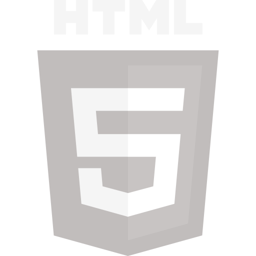
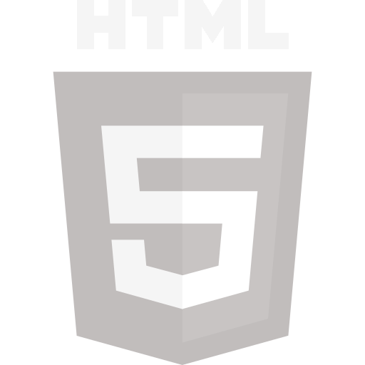

 Github
Github Linkedin
Linkedin Instagram
InstagramSobre mim
“A empatia é certamente um dos mais nobres sentimentos humanos. Para entender e ajudar o próximo é necessário se imaginar na condição dele.” - Lázaro de Souza Gomes
(2015) - Me alistei e servi ao Exército (Academia Militar das Agulhas Negras). Pela minha excelente atividade/serviço e comportamento, tive a felicidade de receber o Certificado Honra ao Mérito.
(2016) - Iniciei meu curso de informática pela Microlins, pelo meu destaque em sala, consegui a oportunidade de trabalhar como instrutor. Em 2017 foi quando realmente comecei a trabalhar com turmas, além de ensinar o pacote office me adaptava e aprendia mais cursos, foi onde eu conheci a programação e me apaixonei.
(2017 – 2022) - Ajudei a escola a conquistar diversos troféus importantes, pude ajudar diversos alunos com meu conhecimento e o meu profissionalismo, fico muito feliz pois todos que passaram por mim sempre me elogiava e agradecia todo o suporte que pude oferecer.
- Hoje apenas estudo Front-End, correndo atrás de uma oportunidade para trabalhar e evoluir nessa área. - Sou criador de conteúdo no YouTube e tenho parceria com a Level Up Games.
- Pontos Forte: Amigável, Paciente, Organização, Trabalho em Equipe, Ideias, Disposto a Evoluir, Auxiliar e Ensinar.
- Pontos Fraco: Às vezes me sinto inseguro, dificuldade em dizer “não”, me concentro demais nos detalhes ........
LinkedinCursos Realizado
Atualmente, estou aprimorando minhas habilidades em Front-End através de cursos na plataforma Alura. Também tenho planos de expandir meus conhecimentos para o Back-End em breve. Você pode conferir todos os cursos que já concluí na Alura através do link abaixo.
Alura